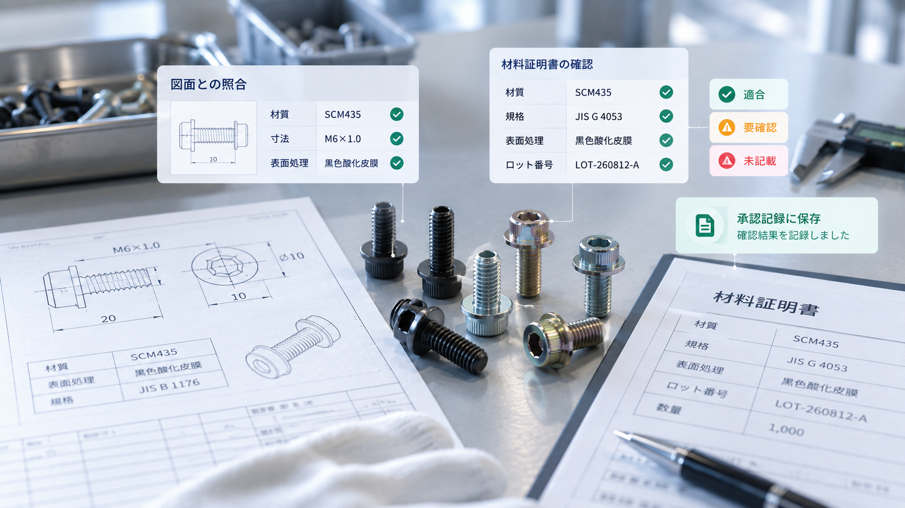

DRAWINGCERTIFICATE要確認 2↔
01 / MATCH
照合
図面と証明書を並べ、差分を3分類。要確認だけを人へ渡します。

PRODUCT PREVIEW
01 / MATCH
図面と証明書を並べ、差分を3分類。要確認だけを人へ渡します。
02 / HOLD LIST
全件ではなく、人が見るべき項目だけを絞り込みます。
03 / APPROVAL
何を確認し、どの資料を根拠にしたかを後から追えます。
04 / STANDARD
見つかった不足を検査基準へ戻し、同じ問題を防ぎます。